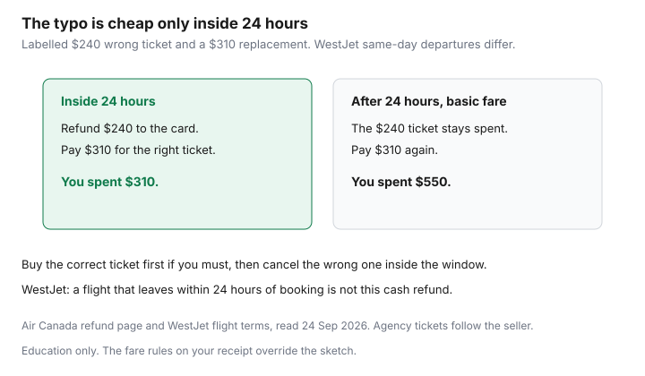

Travel · Canada
Name Typo, Wrong Date, or Double Booking: Fixing Canadian Airline Mistakes Before You Lose the Fare
A one-letter typo, a return on the 12th instead of the 21st, or a second booking made “just in case” turns a basic fare into a second ticket. The cheap fare is often the one that cannot be changed. The fix is the 24-hour window, used on purpose, before the tariff is the only rule left.
This is a Canadian airline and agency playbook. It is not a promise that every typo is free. Air Canada’s public refund page and WestJet’s flight terms were read on 24 Sep 2026. Your fare rules, on the trip review page and on the receipt, override a general article. If the airline cancels the flight, that is a different right: the refund versus voucher guide.
Disclosure: No airline or agency partnership is claimed here. Education only.
Key takeaways
- Air Canada’s refund page says a cancellation within 24 hours of purchase is refunded to the original payment method. WestJet’s flight terms, updated 28 Apr 2026, say the same for a cancellation within 24 hours of booking, except a flight that departs within 24 hours of booking, which is a cancellation fee and a Travel Bank refund.
- WestJet also says the change or cancellation has to be more than two hours before departure. A same-day booking is not the friendly version of the rule.
- A name correction (the ticket must match the passport) is not a name change (a different person travelling). Do not assume either is free on a basic fare once 24 hours have passed. Cancel and rebook inside the window when you still can.
- If an agency issued the ticket, the agency owns the servicing. Calling the airline and the agency about the same booking can create a second problem.
- Standards of treatment — food and drink after two hours, a hotel if you are stuck overnight — apply when a disruption is within the airline’s control, including safety. A typo you made is not that disruption. An error the airline made can be.
- Match the passport, the dates, and the confirmation email before you leave the booking screen. The passport guide is the other half if the booklet itself is wrong or late.
Use the 24-hour cancellation window on AC/WestJet and most OTAs when eligible
The 24-hour window is a full unwind, not a change fee of zero with a fare difference you still hate. Use it when the name, the date, or the duplicate booking is wrong and the fare you want is still on sale. Buy the correct ticket first if you are afraid of losing the seat, then cancel the wrong one inside the window. Two holds are fine for an hour. Two paid basic fares, a day later, are not.
| Who sold it | What the public rule says | What to do in the hour you notice |
|---|---|---|
| Air Canada, on aircanada.com | Cancel within 24 hours of purchase and the refund goes to the original payment method. After 24 hours, the fare type decides. | Cancel in the account the ticket was bought in. Do not wait for a call-back that lands on hour 25. |
| WestJet, on westjet.com | Cancel within 24 hours of the original booking and the full cost goes back to the original form of payment, unless the flight leaves within 24 hours of booking. Changes inside 24 hours are the fare difference only. The cutoff is more than two hours before departure. | A Friday-night booking for a Saturday-morning flight is the same-day exception. Read it before you rely on a cash refund. |
| An online travel agency | Many Canadian sellers offer a void or a cancel window when the airline fare allows it. The U.S. 24-hour rule is not a Canadian domestic statute. The agency’s checkout text is the rule you bought. | Cancel with the agency, in the same account. Ask whether the refund is to the card or to the agency’s credit. |

Screenshot the cancellation confirmation and the refund amount. Air Canada says eligible refunds are targeted within 30 calendar days. “Refund requested” is not “refund received.” If the charge is still on the card after that, the confirmation number is what you send. A basic fare’s 24-hour refund is also why the fare brand matters before you click. The inclusions are the Basic versus Standard guide and the UltraBasic versus Econo guide.
Name corrections vs legal name changes—what tariffs usually allow free
Airlines separate two problems that passengers call by one name.
A correction makes the ticket match the passport or other travel document: a swapped letter, a missing hyphen, a middle name the booking truncated. The person travelling does not change. Air Canada’s older agent materials describe this as a correction, distinct from substituting another passenger, and they have processed corrections on Air Canada-operated tickets without treating them as a paid name-change product. Those manuals are not a current promise. Call and ask for a correction, with the document in your hand. Do not offer to pay a “name change fee” until the agent says a correction is refused.
A legal name change — marriage, divorce, a legal change of name — is the document, not a typo. You may be asked to send the certificate. The ticket still has to match the document you will show at the airport. If the passport is already in the new name, the ticket has to follow the passport. If the passport is still in the old name, do not “update” the ticket to a name the booklet does not show. Renew or update the booklet first. The timing is the passport guide, and it is slower than a fare sale.
A different person is not a correction. Putting a sibling on your basic fare is a new ticket. Some flexible and corporate fares have had paid name-change grids for travel within Canada and to sun destinations. Basic fares are the fares those grids usually exclude. Assume a substitution is not allowed until the tariff on your receipt says it is.
Inside 24 hours, do not negotiate the category. Cancel and buy the ticket in the name on the document. Outside 24 hours, contact the issuer before you travel, not at the bag drop. Security and the airline both match the document to the ticket. A nickname, a shortened first name, or a last name you use socially will not do.
Basic fare change bans and when buying a new ticket is cheaper than change fees
Air Canada Economy Basic, on the fare rules this site already documents, does not allow a voluntary change. WestJet UltraBasic does not allow changes. After the 24-hour window, a wrong date on those fares is often a second purchase. The first ticket remains a sunk cost unless the fare rules still offer a credit, which basic fares usually do not.
On a fare that does allow a change, compare three numbers before you call:
- The change fee plus the fare difference to the date you need, on the same booking.
- The price of a new ticket, if you abandon the old one.
- The price of the correct date if you are still inside 24 hours and can refund the first ticket to the card.
A labelled sketch: a $240 basic fare with the wrong return, and a $310 fare on the right dates. Outside 24 hours you pay $310 and you have spent $550. Inside 24 hours you refund $240 and pay $310. The window is worth $240 in that sketch. It is worth whatever your wrong ticket cost. A Standard or Econo fare with a change fee near $100, plus a $40 fare difference, can be cheaper than a new ticket. Run the addition on the phone before you accept it. Write the figure down. “We’ll email the receipt” is not the figure.
A double booking is the same math twice. Cancel the one you do not want inside the window. If you are past the window, cancel the fare that still has a residual value (a credit, a refundable brand) and keep the one that would otherwise go to zero. Do not fly neither and hope both refund. Do not wait to see which price drops. Basic fares do not drop. They expire.
OTA vs airline-direct: who owns the ticket when something goes wrong
The airline operates the flight. The company that issued the ticket is the one that can refund it, change it, or void it. If the confirmation came from an agency, the airline will often send you back to that agency for a voluntary change, a name correction, and the 24-hour cancel. Air Canada’s refund page says to contact the agency about a fee if the agency sold the ticket. WestJet’s schedule change is still WestJet’s. A typo you typed into an agency form is the agency’s servicing job.
- Look at who charged the card. That name is the first call.
- Do not start a change with the airline and a cancellation with the agency on the same reservation. One of those requests will land on a booking the other has already altered.
- An agency credit is not a refund to the card. Ask which one you are being offered. A credit that expires in a year is a second decision, not a fix.
- If the airline moves the flight and the agency is slow, you still talk to the operating airline about the disruption itself. Standards of treatment and refunds for a cancellation the airline caused are the airline’s obligation under the Air Passenger Protection Regulations. The agency does not replace that. Keep both confirmation numbers.
Booking direct is the simpler owner when you already know the fare is fragile: a basic brand, a name you are unsure how to enter, or a date that depends on someone else’s schedule. An agency is a reasonable owner when the price is the same and you are comparing several airlines in one checkout. Choose the owner before you pay. Switching owners after a mistake is how the 24 hours disappear.
Document APPR standards of treatment if the airline’s error strands you
A typo is your error. A reissue that drops a segment, a schedule change you did not accept, or a misconnection caused by a delay the airline owns is the airline’s disruption. The Air Passenger Protection Regulations sort that disruption into within the carrier’s control, within control but required for safety, and outside the carrier’s control. Standards of treatment apply to the first two, not to the third.
Section 14 of the regulations: once you have waited two hours past the departure time on your original ticket, the airline must provide food and drink in reasonable quantities and access to a means of communication. If an overnight wait is expected, the airline must offer a hotel or comparable accommodation and transportation to it and back. Those are free. They are not the cash compensation schedule. Compensation for inconvenience, when it applies, is the separate claim in the how to claim guide. Large-airline amounts and the one-year filing clock live there. This page only says: do not pay for the sandwich and the hotel out of pocket and then throw away the receipts if the airline should have provided them.
If you believe the airline’s own handling stranded you, write down the flight numbers, the scheduled and actual times, what the agent said, and the names on the boarding passes. Photograph the rebooking. Ask which disruption category they are using. A category of “outside the carrier’s control” is a claim you can test later. It is not something you have to argue at the podium while the next flight boards. A passenger name that does not match the passport is not this section. Fix the name, or you may not be boarding the flight the airline is trying to protect.
Build a pre-departure checklist: passport name match, dates, and confirmation emails
Run this list before you pay, and again the day the confirmation arrives. Ten minutes here is the change fee.
- Surname and given names as printed in the passport, including hyphens and spaces. Not a preferred name. Not the name on a driver’s licence if it differs. Every person on the booking, including children.
- Dates in both directions, including the year. Read the weekday. A return on “the 12th” that is a Wednesday when you needed a Friday is the expensive kind of right number.
- Airports, not just cities. Hamilton is not Pearson. Saint-Hubert is not Trudeau. The secondary-airport guide is a choice you make on purpose.
- Who issued the ticket, and whether you are inside 24 hours if anything above is wrong.
- The confirmation email the same day, opened, not just received. Check the fare brand, the bag, and the names against the passport again. A basic fare with the right name and the wrong bag plan is a different loss, and it is still cheaper to see it now.
- Passport expiry against the country’s entry rule before a non-refundable fare. Six months is a common requirement and not a universal one. If the booklet will not clear in time, do not buy the fare to “hold the price.”
Save the email and a PDF of the receipt where a second adult can open them. The person who booked should not be the only person who can start a cancellation at 10 p.m.
Sources & date stamps
- Air Canada, refund and cancellation policy — cancel within 24 hours of purchase for a refund to the original payment method; after 24 hours the fare type applies; agency tickets go back to the agency; eligible refunds targeted within 30 days. Read 24 Sep 2026.
- WestJet, flight terms updated 28 Apr 2026, and the change-and-cancel page — 24-hour cancellation to the original form of payment except same-day departures (Travel Bank after the cancellation fee); changes inside 24 hours are the fare difference only; more than two hours before departure. Read 24 Sep 2026.
- Air Passenger Protection Regulations, SOR/2019-150, section 14 — food, drink, and communication after a two-hour wait, and overnight accommodation when a within-control disruption strands you. Consolidated text read 24 Sep 2026. Compensation amounts stay on the claim guide.
- Air Canada agent materials distinguish a name correction (document match) from a name change (a different passenger). Treat the current tariff and the contact centre as the authority. The 24-hour cancel is the path that does not depend on that distinction.
Frequently asked questions
Can I cancel an Air Canada or WestJet ticket within 24 hours?
Air Canada’s refund page says a cancellation within 24 hours of purchase is refunded to the original payment method. WestJet’s flight terms say the same within 24 hours of booking, except a flight that departs within 24 hours of booking, which is a cancellation fee and a Travel Bank refund. WestJet also wants the change or cancellation more than two hours before departure.
Is a spelling mistake free to fix?
Inside 24 hours, cancel and rebook in the name on the passport. Outside that window, ask for a name correction so the ticket matches the travel document. A correction is not a different person. Do not assume a basic fare allows a free change or a free substitution once the window has closed.
What if a basic fare has the wrong date?
Air Canada Basic and WestJet UltraBasic do not allow voluntary changes. After 24 hours, buying the correct ticket is often cheaper than hoping for a fee that does not exist. Compare a change fee plus the fare difference on brands that allow changes. Write the number down before you accept it.
I booked through an agency. Who do I call?
The company that charged the card owns a voluntary cancel, a name correction, and the 24-hour void. Call that agency. Do not start a change with the airline and a cancellation with the agency on the same booking. If the airline cancels the flight, the operating airline still owes the disruption rules.
Does a typo entitle me to a hotel and a meal?
No. Standards of treatment — food and drink after a two-hour wait, and a hotel if you are stuck overnight — apply when the disruption is within the airline’s control, including safety. They apply if the airline’s own error strands you. They do not apply because the name on the ticket was typed wrong.